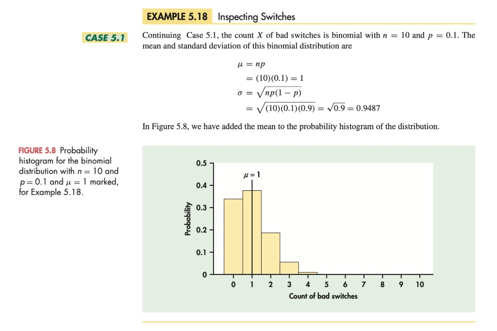
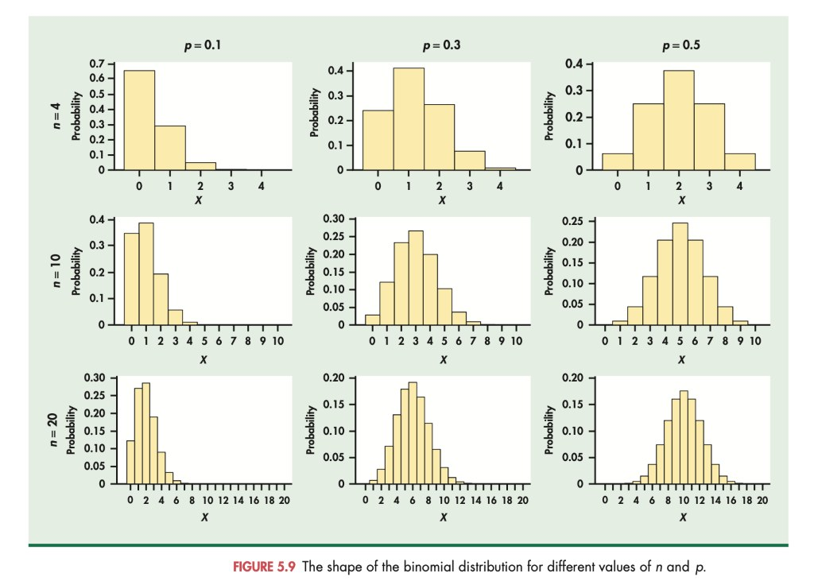
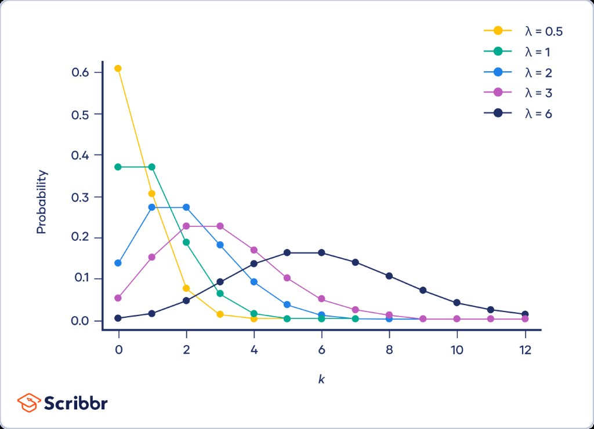
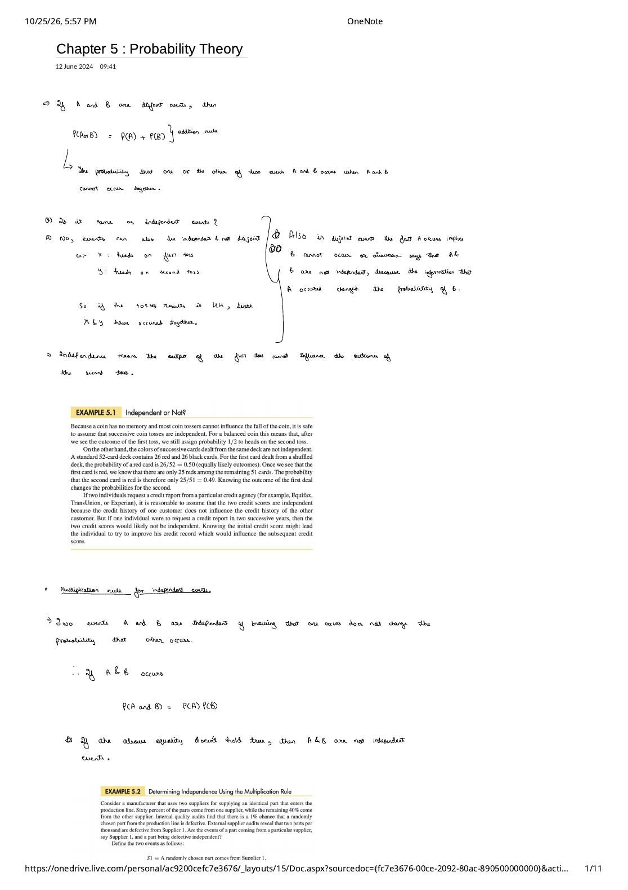
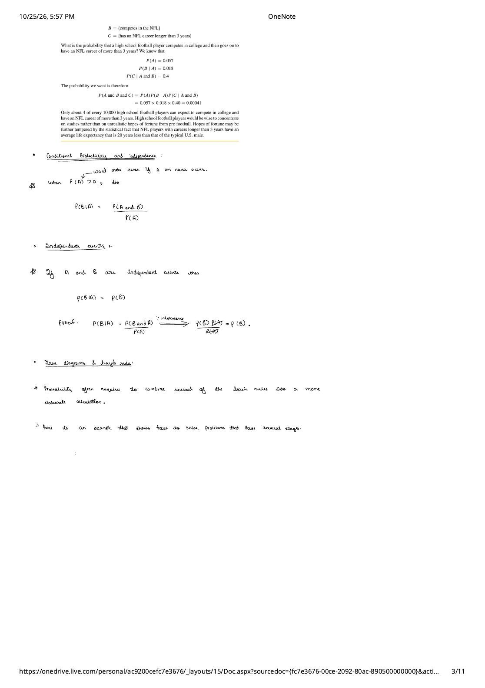
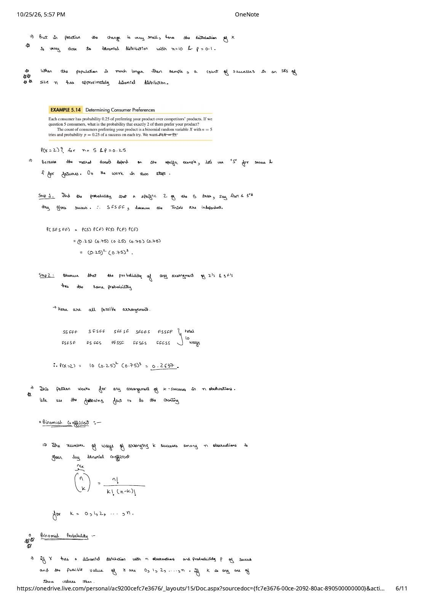
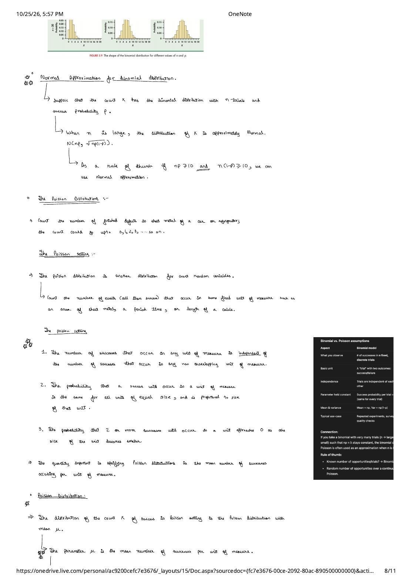
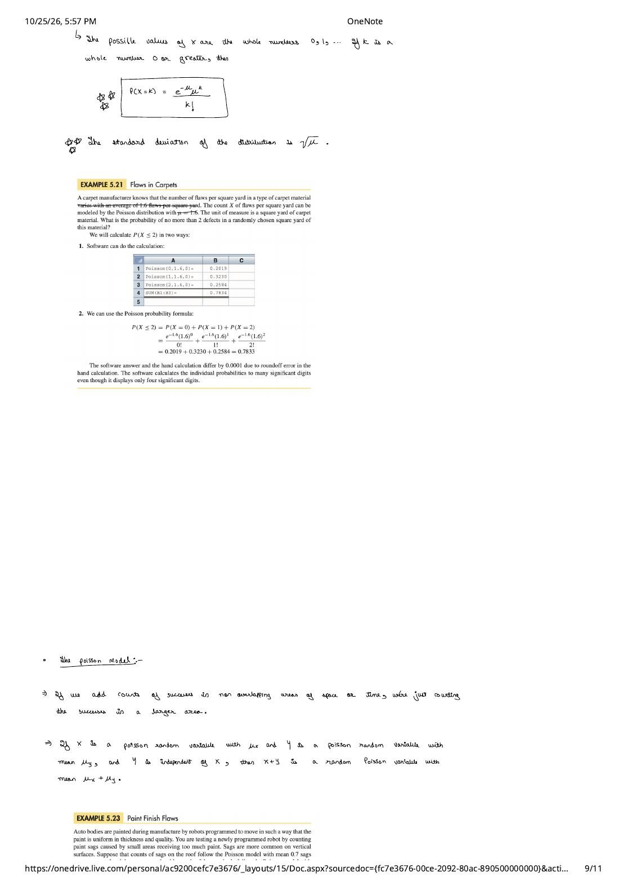

Chapter 5: Probability Theory
Expanded from Statistics_Chapter5_Probability_Theory_v2.pdf (11 pages) · View original handwritten pages
This chapter builds the core probability rules and discrete count distributions from the handwritten notes: distinguishing disjoint events from independent events, deriving the general addition and multiplication rules, conditional probability, and Bayes' rule, and then developing the two workhorse models for count data—the Binomial distribution and the Poisson distribution.
5.1 General Probability Rules
Disjoint Events versus Independent Events
Two events $A$ and $B$ are disjoint (or mutually exclusive) if they have no outcomes in common and therefore cannot occur together ($P(A \text{ and } B) = 0$). For disjoint events, the probability that one or the other occurs is given by the addition rule for disjoint events:
A frequent pitfall in introductory probability is confusing disjoint events with independent events. The handwritten notes address this directly on page 1:
- Events can be independent without being disjoint: Toss a fair coin twice. Let $X$ be the event "heads on the first toss" and $Y$ be the event "heads on the second toss." Because the coin has no memory, $X$ and $Y$ are independent—yet if the tosses land `HH`, both $X$ and $Y$ occur together, so they are not disjoint.
- Disjoint events (with positive probability) are never independent: If $A$ and $B$ are disjoint, knowing that event $A$ occurred immediately tells us that event $B$ could not have occurred, changing the probability of $B$ from $P(B) > 0$ down to $0$. Because knowledge of $A$ alters the probability of $B$, disjoint events are dependent.
Example 5.1 (Checking Independence in Practice):
- Successive coin tosses: Independent ($P(\text{2nd toss is H} \mid \text{1st toss is H}) = 1/2$).
- Successive cards dealt from a shuffled $52\text{-card}$ deck without replacement: Not independent. The deck starts with $26$ red and $26$ black cards, so $P(\text{1st card red}) = 26/52 = 0.50$. Once we see that the first card dealt is red, only $25$ red cards remain among the $51$ remaining cards, changing the probability of a red second card to $25/51 \approx 0.4902$.
- Credit scores from a bureau (Equifax, TransUnion, Experian): Credit scores of two unrelated individuals are independent, whereas the credit scores of the same individual in two consecutive years are dependent.
Multiplication Rule for Independent Events & General Addition Rule
Two events $A$ and $B$ are independent if knowing that one occurs does not change the probability that the other occurs. This gives the multiplication rule for independent events:
If this equality does not hold, then $A$ and $B$ are not independent.
A manufacturer buys $60\%$ of an identical component from Supplier 1 ($P(S_1) = 0.60$) and the remaining $40\%$ from Supplier 2. Internal quality audits show that $1\%$ of all components entering the production line are defective ($P(D) = 0.01$), and external audits show that $2$ parts per thousand are both from Supplier 1 and defective ($P(S_1 \text{ and } D) = 0.002$). Are $S_1$ and $D$ independent?
If they were independent, their joint probability would equal the product of their marginal probabilities:
$$P(S_1)\,P(D) = (0.60)(0.01) = \mathbf{0.006}.$$ Because the actual joint probability $P(S_1 \text{ and } D) = \mathbf{0.002} \neq 0.006$, the supplier source and defect status are not independent (Supplier 1 is much more reliable than Supplier 2!).
When two events $A$ and $B$ can occur together (not disjoint), adding $P(A) + P(B)$ double-counts the overlap $P(A \text{ and } B)$. Subtracting that overlap once gives the General Addition Rule for any two events:
Conditional Probability, the General Multiplication Rule, and Bayes' Rule
The probability that event $B$ occurs given the information that event $A$ has occurred is the conditional probability $P(B \mid A)$. Whenever $P(A) > 0$:
Short Proof from Page 3 (Why Independence Means $P(B \mid A) = P(B)$): If $A$ and $B$ are independent, then $P(B \text{ and } A) = P(B)\,P(A)$. Substituting this into the definition of conditional probability cancels $P(A)$:
Define three sequential events for a high-school football player:
• $A = \{\text{competes in college}\}$ with $P(A) = 0.057$ ($5.7\%$)
• $B = \{\text{competes in the NFL}\}$ with conditional probability $P(B \mid A) = 0.018$ ($1.8\%$ of college players)
• $C = \{\text{NFL career lasts more than 3 years}\}$ with $P(C \mid A \text{ and } B) = 0.40$ ($40\%$ of NFL players)
By the general multiplication rule, the probability that a high-school player reaches the NFL and plays for more than $3$ years is:
$$P(A \text{ and } B \text{ and } C) = P(A)\,P(B \mid A)\,P(C \mid A \text{ and } B) = (0.057)(0.018)(0.40) = \mathbf{0.00041},$$ or only about $4$ out of every $10{,}000$ high-school football players!
Bayes' Rule (Page 4): When we know the forward conditional probabilities $P(B \mid A)$ and $P(B \mid A^c)$ and the prior probability $P(A)$, we can invert the conditioning to find $P(A \mid B)$. Since $B$ can occur either with $A$ or with its complement $A^c$, total probability gives $P(B) = P(B \mid A)P(A) + P(B \mid A^c)P(A^c)$, yielding Bayes' Rule:
5.2 The Binomial Distributions
Suppose an HR manager asks $100$ employees whether job stress affects their personal lives, or a company market-tests $30$ new products, or a computer store tracks how many of $60$ computers sold with extended warranties need repair within $3$ years. In all three cases, we want a probability model for the count $X$ of "successful" outcomes.
- There is a fixed number $n$ of observations (trials).
- The $n$ observations are all independent (knowing the outcome of one trial tells you nothing about the others).
- Each observation falls into one of just two categories, which for convenience we call "success" and "failure."
- The probability of a success, denoted by $p$, is the same for each observation.
When Is a Count Binomial? Sampling Without Replacement in Quality Control
If you deal $10$ cards without replacement from a standard $52\text{-card}$ deck and count the number $X$ of red cards (Example 5.13), $X$ does not have a Binomial distribution because the deck is small ($N = 52$) and each dealt card noticeably alters the red/black ratio for subsequent cards.
What if the population is much larger than the sample? In Case 5.1 (Inspecting a Supplier's Product), a manufacturing engineer inspects an SRS of $n = 10$ switches drawn without replacement from a shipment of $N = 10{,}000$ switches in which $10\%$ ($1{,}000$ switches) are nonconforming (defective):
- Strictly speaking, the draws are not independent: the first switch is defective with probability $1{,}000 / 10{,}000 = 0.10000$. If the first switch is good, the conditional probability that the second switch is defective becomes $1{,}000 / 9{,}999 = \mathbf{0.10001}$; if the first switch fails, it becomes $999 / 9{,}999 = \mathbf{0.09991}$.
- In practice, the difference between $0.10001$ and $0.09991$ is tiny! Rule: Whenever the population size $N$ is much larger than the sample size $n$, the count $X$ of successes in an SRS of size $n$ follows the Binomial distribution $B(n, p)$ to an excellent approximation.
Deriving the Binomial Probability Formula Step by Step
Let us follow Example 5.14 on page 6 of the notes: suppose each consumer independently has probability $p = 0.25$ of preferring your product over competitors' products. If we interview $n = 5$ consumers, what is the probability $P(X = 2)$ that exactly $2$ of them prefer your product?
- Step 1 — Probability of one specific arrangement of $2$ successes (`S`) and $3$ failures (`F`): Consider the sequence `SFSFF` (the $1\text{st}$ and $3\text{rd}$ consumers prefer your product). Because the $5$ consumers are independent, multiply their individual probabilities:
$$P(\text{SFSFF}) = P(S)\,P(F)\,P(S)\,P(F)\,P(F) = (0.25)(0.75)(0.25)(0.75)(0.75) = (0.25)^2 (0.75)^3.$$
- Step 2 — Count all possible arrangements of $2$ `S`'s and $3$ `F`'s: Any other arrangement of two `S`'s and three `F`'s multiplies the exact same five factors in a different order, so every such sequence has probability $(0.25)^2 (0.75)^3$. There are $10$ mutually exclusive arrangements:
`SSFFF`, `SFSFF`, `SFFSF`, `SFFFS`, `FSSFF`,
`FSFSF`, `FSFFS`, `FFSSF`, `FFSFS`, `FFFSS` ($10$ arrangements total).
$$\therefore\; P(X = 2) = 10\,(0.25)^2(0.75)^3 = 10(0.0625)(0.421875) = \mathbf{0.2637}.$$
In general, the number of ways of arranging $k$ successes among $n$ observations is given by the binomial coefficient:
Combining the arrangement count $\binom{n}{k}$ with the single-sequence probability $p^k(1-p)^{n-k}$ yields the Binomial Probability Formula:
In Case 5.1, the number $X$ of defective switches in an SRS of $n = 10$ from a shipment with $p = 0.10$ defective rate follows $B(10, 0.10)$. What is the probability that no more than $1$ switch fails ($X \le 1$)?
$$\begin{aligned} P(X \le 1) &= P(X = 1) + P(X = 0) \\ &= \binom{10}{1}(0.1)^1(0.9)^9 + \binom{10}{0}(0.1)^0(0.9)^{10} \\ &= \frac{10!}{1!\,9!}(0.1)(0.3874) + \frac{10!}{0!\,10!}(1)(0.3487) \\ &= 10(0.1)(0.3874) + (1)(1)(0.3487) = 0.3874 + 0.3487 = \mathbf{0.7361}. \end{aligned}$$ Notice the engineering lesson: even though $10\%$ of the entire shipment is defective, $73.6\%$ of samples of size $10$ will contain at most $1$ bad switch (and $34.9\%$ will contain zero bad switches!). A sample of $n = 10$ is far too small to reliably detect a $10\%$ defect rate.
Binomial Mean, Standard Deviation, and Normal Approximation
Because a Binomial random variable $X \sim B(n, p)$ is the sum of $n$ independent indicator variables that each take value $1$ with probability $p$ (mean $p$, variance $p(1-p)$) and $0$ with probability $1-p$, the addition rules from Chapter 4 immediately give the mean and standard deviation of a Binomial random variable:
For the switch-inspection example ($n = 10, p = 0.10$), the mean number of bad switches is $\mu = (10)(0.10) = \mathbf{1}$ and the standard deviation is $\sigma = \sqrt{10(0.10)(0.90)} = \sqrt{0.90} = \mathbf{0.9487}$.


5.3 The Poisson Distributions
What if we are counting events that occur randomly over a continuous unit of space or time—such as the number of surface defects in a square yard of sheet metal or carpet, the number of network packet arrivals per second, or the number of flaws along a mile of fiber-optic cable? There is no fixed finite number of discrete "trials" $n$; the count $X$ can take any whole number $0, 1, 2, 3, \dots$ without a preset upper bound.
The Poisson Setting and Formula
A count $X$ of occurrences ("successes") in a fixed unit of measure follows a Poisson setting if three conditions hold:
- Independence across non-overlapping units: The number of successes that occur in any unit of measure is independent of the number of successes that occur in any non-overlapping unit of measure.
- Constant rate proportional to unit size: The probability that a success will occur in a unit of measure is the same for all units of equal size and is proportional to the size of that unit.
- No simultaneous occurrences: The probability that $2$ or more successes occur in the exact same tiny sub-unit approaches $0$ as the size of the unit becomes smaller.
The single parameter needed to specify a Poisson distribution is $\mu$ (often written $\lambda$), the mean number of successes per unit of measure. For any whole number $k = 0, 1, 2, \dots$, the Poisson probability formula and its standard deviation are:
The count $X$ of weaving flaws per square yard of carpet follows $\operatorname{Poisson}(\mu = 1.6)$. What is the probability of no more than $2$ defects in a randomly chosen square yard ($X \le 2$)?
$$\begin{aligned} P(X \le 2) &= P(X = 0) + P(X = 1) + P(X = 2) \\ &= \frac{e^{-1.6}(1.6)^0}{0!} + \frac{e^{-1.6}(1.6)^1}{1!} + \frac{e^{-1.6}(1.6)^2}{2!} \\ &= 0.2019 + 0.3230 + 0.2584 = \mathbf{0.7833} \quad (\text{or } 0.7834\text{ at full machine precision}). \end{aligned}$$
Additivity and Scaling of Independent Poisson Counts
If we add counts of occurrences in non-overlapping areas of space or intervals of time, we are simply counting occurrences in a larger combined region. More generally: if $X \sim \operatorname{Poisson}(\mu_X)$ and $Y \sim \operatorname{Poisson}(\mu_Y)$ are independent, then their sum $X + Y$ is a Poisson random variable with mean $\mu_X + \mu_Y$.
Paint sags on the horizontal roof of a car body follow $\operatorname{Poisson}(0.7\text{ sags per sq yd})$, while sags on vertical side panels follow $\operatorname{Poisson}(1.4\text{ sags per sq yd})$, and counts in non-overlapping areas are independent:
• $2\text{ square yards}$ of roof: $\operatorname{Poisson}(0.7 + 0.7 = \mathbf{1.4})$.
• Entire roof ($4.8\text{ square yards}$): $\operatorname{Poisson}(4.8 \times 0.7 = \mathbf{3.36})$.
• $1\text{ square foot}$ ($= 1/9\text{ square yard}$) of roof: $\operatorname{Poisson}\!\left(\frac{1}{9} \times 0.7 = \mathbf{0.078}\right)$.
• $1\text{ square yard}$ of roof plus $1\text{ square yard}$ of side panel: $\operatorname{Poisson}(0.7 + 1.4 = \mathbf{2.1})$.
Comparing Binomial and Poisson Models & Distribution Approximations
Page 8 and Page 10 of the handwritten notes connect the Binomial, Poisson, and Normal distributions into a unified approximation toolkit:
| Aspect | Binomial Model $B(n, p)$ | Poisson Model $\operatorname{Poisson}(\mu)$ |
|---|---|---|
| What you observe | Count of successes in $n$ fixed, discrete trials | Count of occurrences in a continuous unit of time, area, or space |
| Basic unit | A discrete trial with two outcomes (success / failure) | A continuous interval or region where events can occur anywhere |
| Parameter held constant | Success probability $p$ per trial | Average rate $\mu$ (or $\lambda$) per unit of measure |
| Mean & Variance | $\mu = np$, $\quad \sigma^2 = np(1 - p) < \mu$ | $\mu$, $\quad \sigma^2 = \mu$ ($\sigma = \sqrt{\mu}$) |
| When to approximate by Normal | Large $n$ with $np \ge 10$ and $n(1-p) \ge 10$: use $N\!\left(np, \sqrt{np(1-p)}\right)$ | Large $\mu$: use $N\!\left(\mu, \sqrt{\mu}\right)$ |
| When to approximate Binomial by Poisson | When $n$ is large and $p$ is very small so that $np < 10$ (where the Normal approximation fails due to skewness), approximate $B(n, p)$ by $\operatorname{Poisson}(\mu = np)$. | |

From the Handwritten Notes
Open the original handwritten page scans from Statistics_Chapter5_Probability_Theory_v2.pdf below:
View original page 1 — Disjoint vs. independent events & the multiplication rule


View original page 3 — Conditional probability formula & proof of $P(B \mid A) = P(B)$


View original page 6 — Two-step derivation of the Binomial probability formula


View original page 8 — Normal approximation rule ($np \ge 10, n(1-p) \ge 10$) & the Poisson setting


= 10 and n(1-p) >= 10 rule of thumb, the 3 conditions of the Poisson setting, and the Binomial vs Poisson comparison card.">View original page 9 — Poisson formula $e^{-\mu}\mu^k/k!$, carpet flaws, and Poisson additivity

